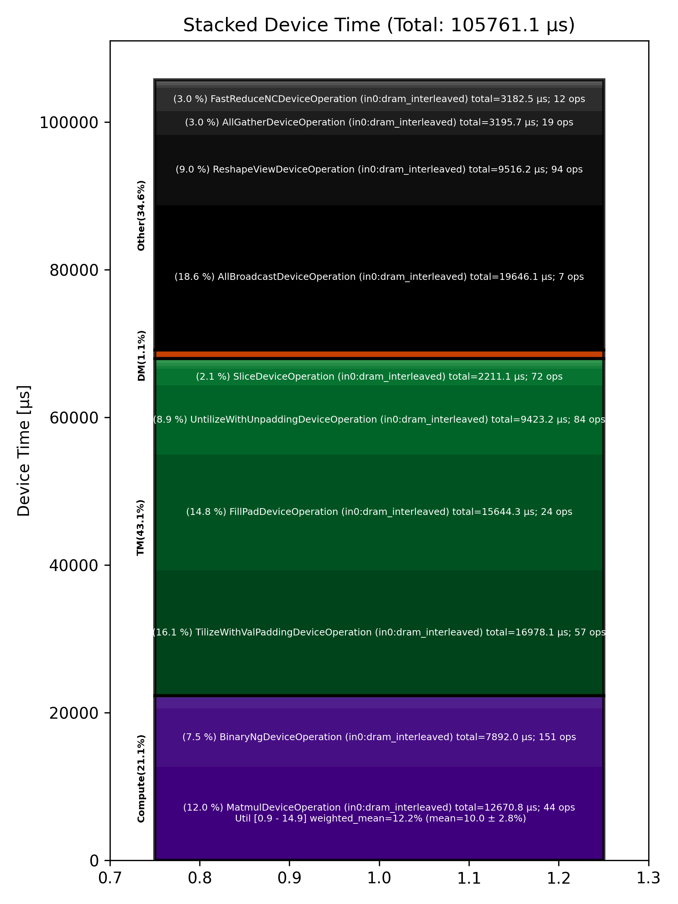

🚀 Performance Report 🚀 ======================== ID Total % Bound OP Code Device Device Time Op-to-Op Gap Cores DRAM DRAM % FLOPs FLOPs % Math Fidelity ----------------------------------------------------------------------------------------------------------------------------------------------------------------------------- 9 0.0 % TilizeWithValPaddingDeviceOperation 0 7 μs 1 INT32 => INT32 42 0.0 % TypecastDeviceOperation 28 2 μs 642 μs 1 INT32 => UINT32 86 0.0 % ReshapeViewDeviceOperation 15 4 μs 350 μs 1 UINT32 => UINT32 118 0.0 % UntilizeWithUnpaddingDeviceOperation 15 2 μs 134 μs 1 UINT32 => UINT32 141 0.0 % EmbeddingsDeviceOperation 31 6 μs 324 μs 16 UINT32, BF16 => BF16 176 0.0 % TilizeWithValPaddingDeviceOperation 5 12 μs 124 μs 45 BF16 => BF16 209 0.0 % LayerNormDeviceOperation 4 108 μs 258 μs 1 BF16, BF16 => BF16 236 0.0 % SLOW MatmulDeviceOperation 32 x 2880 x 512 3 42 μs 618 μs 16 40 GB/s 14.1 % 2.3 TFLOPs 6.9 % HiFi2 BF16 x BFP8 => BF16 273 0.0 % ReshapeViewDeviceOperation 4 13 μs 99 μs 72 BF16 => BF16 317 0.0 % SliceDeviceOperation 19 5 μs 267 μs 72 BF16 => BF16 352 0.0 % TilizeWithValPaddingDeviceOperation 9 7 μs 341 μs 1 INT32 => INT32 374 0.0 % TypecastDeviceOperation 15 2 μs 353 μs 1 INT32 => FP32 404 0.0 % SLOW MatmulDeviceOperation 32 x 32 x 32 12 7 μs 771 μs 1 2 GB/s 0.6 % 0.0 TFLOPs 0.9 % HiFi4 FP32 x FP32 => FP32 442 0.0 % UnaryDeviceOperation 16 3 μs 137 μs 1 FP32 => FP32 470 0.0 % ReshapeViewDeviceOperation 15 6 μs 270 μs 1 FP32 => FP32 486 0.0 % BinaryNgDeviceOperation 3 8 μs 118 μs 72 FP32, FP32 => FP32 532 0.0 % TypecastDeviceOperation 22 2 μs 198 μs 1 FP32 => BF16 558 0.0 % BinaryNgDeviceOperation 7 15 μs 118 μs 72 BF16, BF16 => BF16 595 0.0 % SliceDeviceOperation 21 5 μs 263 μs 72 BF16 => BF16 623 0.0 % UnaryDeviceOperation 6 3 μs 281 μs 1 FP32 => FP32 646 0.0 % ReshapeViewDeviceOperation 3 6 μs 304 μs 1 FP32 => FP32 693 0.0 % BinaryNgDeviceOperation 23 8 μs 98 μs 72 FP32, FP32 => FP32 718 0.0 % TypecastDeviceOperation 7 2 μs 161 μs 1 FP32 => BF16 748 0.0 % BinaryNgDeviceOperation 30 16 μs 96 μs 72 BF16, BF16 => BF16 777 0.0 % BinaryNgDeviceOperation 0 7 μs 93 μs 72 BF16, BF16 => BF16 831 0.0 % BinaryNgDeviceOperation 10 15 μs 200 μs 72 BF16, BF16 => BF16 864 0.0 % BinaryNgDeviceOperation 9 16 μs 224 μs 72 BF16, BF16 => BF16 876 0.0 % BinaryNgDeviceOperation 30 7 μs 90 μs 72 BF16, BF16 => BF16 913 0.0 % ConcatDeviceOperation 4 7 μs 176 μs 72 BF16, BF16 => BF16 957 0.0 % SLOW MatmulDeviceOperation 32 x 2880 x 64 20 30 μs 566 μs 2 12 GB/s 4.3 % 0.4 TFLOPs 9.5 % HiFi2 BF16 x BFP8 => BF16 983 0.0 % ReshapeViewDeviceOperation 14 4 μs 149 μs 32 BF16 => BF16 1025 0.0 % SliceDeviceOperation 8 2 μs 179 μs 16 BF16 => BF16 1028 0.0 % PermuteDeviceOperation 26 4 μs 276 μs 16 BF16 => BF16 1083 0.0 % BinaryNgDeviceOperation 17 5 μs 266 μs 72 BF16, BF16 => BF16 1092 0.0 % SliceDeviceOperation 26 2 μs 264 μs 16 BF16 => BF16 1144 0.0 % PermuteDeviceOperation 13 4 μs 85 μs 16 BF16 => BF16 1154 0.0 % BinaryNgDeviceOperation 24 5 μs 168 μs 72 BF16, BF16 => BF16 1212 0.0 % BinaryNgDeviceOperation 18 3 μs 94 μs 72 BF16, BF16 => BF16 1245 0.0 % BinaryNgDeviceOperation 19 5 μs 179 μs 72 BF16, BF16 => BF16 1263 0.0 % BinaryNgDeviceOperation 6 5 μs 257 μs 72 BF16, BF16 => BF16 1305 0.0 % BinaryNgDeviceOperation 12 3 μs 257 μs 72 BF16, BF16 => BF16 1317 0.0 % ConcatDeviceOperation 27 2 μs 351 μs 32 BF16, BF16 => BF16 1346 0.0 % RepeatDeviceOperation 24 2 μs 265 μs 72 INT32 => INT32 1392 0.0 % InterleavedToShardedDeviceOperation 5 1 μs 260 μs 16 BF16 => BF16 1418 44.4 % PagedUpdateCacheDeviceOperation 28 4 μs 3,744,847 μs 16 BF16, BF16 => BF16 1452 0.0 % TilizeWithValPaddingDeviceOperation 30 7 μs 328 μs 1 INT32 => INT32 1480 0.0 % BinaryNgDeviceOperation 1 3 μs 701 μs 72 INT32, INT32 => INT32 1532 0.0 % BinaryNgDeviceOperation 18 10 μs 143 μs 72 INT32, INT32 => BF16 1565 0.0 % TilizeWithValPaddingDeviceOperation 19 4 μs 300 μs 1 BF16 => BF16 1581 0.0 % BinaryNgDeviceOperation 31 6 μs 120 μs 72 BF16, BF16 => BF16 1624 0.0 % TilizeWithValPaddingDeviceOperation 13 7 μs 354 μs 1 INT32 => INT32 1637 0.0 % BinaryNgDeviceOperation 27 10 μs 331 μs 72 INT32, INT32 => BF16 1696 0.0 % BinaryNgDeviceOperation 9 4 μs 116 μs 72 BF16, BF16 => BF16 1703 0.0 % TernaryDeviceOperation 2 25 μs 265 μs 72 BF16, BF16 => BF16 1757 0.0 % SLOW MatmulDeviceOperation 32 x 2880 x 64 20 30 μs 1,393 μs 2 12 GB/s 4.3 % 0.4 TFLOPs 9.5 % HiFi2 BF16 x BFP8 => BF16 1769 0.0 % ReshapeViewDeviceOperation 0 3 μs 163 μs 32 BF16 => BF16 1823 0.0 % PermuteDeviceOperation 10 4 μs 233 μs 32 BF16 => BF16 1828 0.0 % InterleavedToShardedDeviceOperation 26 1 μs 366 μs 16 BF16 => BF16 1862 0.0 % PagedUpdateCacheDeviceOperation 3 4 μs 299 μs 16 BF16, BF16 => BF16 1897 0.0 % PermuteDeviceOperation 0 8 μs 105 μs 72 BF16 => BF16 1938 0.0 % UntilizeWithUnpaddingDeviceOperation 20 4 μs 243 μs 1 BF16 => BF16 1974 0.0 % RepeatDeviceOperation 15 2 μs 105 μs 72 BF16 => BF16 2013 0.0 % TilizeWithValPaddingDeviceOperation 19 10 μs 248 μs 1 BF16 => BF16 2038 0.0 % SdpaDecodeDeviceOperation 15 17 μs 213 μs 72 BF16, BF16 => BF16 2067 0.0 % PermuteDeviceOperation 21 22 μs 153 μs 72 BF16 => BF16 2095 0.0 % ReshapeViewDeviceOperation 6 13 μs 326 μs 16 BF16 => BF16 2122 0.0 % SLOW MatmulDeviceOperation 32 x 512 x 2880 13 15 μs 442 μs 45 113 GB/s 39.4 % 6.3 TFLOPs 13.7 % HiFi4 BF16 x BFP8 => BF16 2161 0.0 % AllGatherDeviceOperation 0 81 μs 512 μs 24 BF16 => BF16 2207 0.0 % FillPadDeviceOperation 10 155 μs 65 μs 8 BF16 => BF16 2225 0.0 % FastReduceNCDeviceOperation 4 10 μs 155 μs 72 BF16 => BF16 2247 0.0 % SliceDeviceOperation 2 3 μs 253 μs 72 BF16 => BF16 2299 0.0 % BinaryNgDeviceOperation 17 5 μs 297 μs 72 BF16, BF16 => BF16 2326 0.0 % BinaryNgDeviceOperation 15 5 μs 261 μs 72 BF16, BF16 => BF16 2369 0.0 % ReshapeViewDeviceOperation 8 45 μs 233 μs 72 BF16 => BF16 2400 0.0 % LayerNormDeviceOperation 9 110 μs 230 μs 16 BF16, BF16 => BF16 2418 0.0 % ReshapeViewDeviceOperation 20 29 μs 143 μs 72 BF16 => BF16 2451 0.0 % UntilizeWithUnpaddingDeviceOperation 21 9 μs 230 μs 45 BF16 => BF16 2495 0.0 % RepeatDeviceOperation 10 61 μs 92 μs 72 BF16 => BF16 2521 0.0 % TilizeWithValPaddingDeviceOperation 12 292 μs 110 μs 45 BF16 => BF16 2531 0.0 % SLOW MatmulDeviceOperation 32 x 2880 x 736 9 1,392 μs 113 μs 23 54 GB/s 18.8 % 3.1 TFLOPs 13.2 % HiFi4 BF16 x BFP8 => BF16 2587 0.0 % BinaryNgDeviceOperation 17 22 μs 1 μs 72 BF16, BF16 => BF16 2611 0.0 % UntilizeWithUnpaddingDeviceOperation 21 24 μs 1 μs 32 BF16 => BF16 2649 0.0 % SliceDeviceOperation 12 154 μs 1 μs 72 BF16 => BF16 2688 0.0 % TilizeWithValPaddingDeviceOperation 9 28 μs 1 μs 32 BF16 => BF16 2695 0.0 % UnaryDeviceOperation 2 9 μs 1 μs 72 BF16 => BF16 2736 0.0 % BinaryNgDeviceOperation 5 18 μs 1 μs 72 BF16, BF16 => BF16 2779 0.0 % UntilizeWithUnpaddingDeviceOperation 17 24 μs 1 μs 32 BF16 => BF16 2792 0.0 % SliceDeviceOperation 1 153 μs 234 μs 72 BF16 => BF16 2832 0.0 % TilizeWithValPaddingDeviceOperation 5 28 μs 1 μs 32 BF16 => BF16 2867 0.0 % UnaryDeviceOperation 21 9 μs 91 μs 72 BF16 => BF16 2886 0.0 % BinaryNgDeviceOperation 3 18 μs 102 μs 72 BF16, BF16 => BF16 2943 0.0 % UnaryDeviceOperation 10 12 μs 156 μs 72 BF16 => BF16 2966 0.0 % BinaryNgDeviceOperation 15 15 μs 96 μs 72 BF16, BF16 => BF16 2986 0.0 % BinaryNgDeviceOperation 28 14 μs 168 μs 72 BF16, BF16 => BF16 3011 0.0 % SLOW MatmulDeviceOperation 32 x 384 x 2880 9 496 μs 518 μs 45 85 GB/s 29.4 % 4.6 TFLOPs 9.9 % HiFi4 BF16 x BFP8 => BF16 3057 0.0 % ReduceScatterDeviceOperation 0 199 μs 161 μs 24 BF16 => BF16 3089 0.0 % AllGatherDeviceOperation 0 192 μs 340 μs 40 BF16 => BF16 3107 0.0 % BinaryNgDeviceOperation 25 91 μs 1 μs 72 BF16, BF16 => BF16 3164 0.0 % ReshapeViewDeviceOperation 18 1,244 μs 130 μs 72 BF16 => BF16 3194 0.0 % TypecastDeviceOperation 16 57 μs 1 μs 72 BF16 => FP32 3213 0.0 % ReshapeViewDeviceOperation 31 46 μs 1 μs 72 FP32 => FP32 3258 0.0 % SLOW MatmulDeviceOperation 32 x 2880 x 32 25 32 μs 1 μs 1 14 GB/s 5.0 % 0.2 TFLOPs 8.9 % HiFi2 FP32 x BFP8 => FP32 3294 0.0 % TypecastDeviceOperation 11 2 μs 2 μs 1 FP32 => BF16 3299 0.0 % FillPadDeviceOperation 25 3 μs 2 μs 1 BF16 => BF16 3353 0.0 % PadDeviceOperation 12 35 μs 80 μs 2 BF16 => BF16 3376 0.0 % FillPadDeviceOperation 5 5 μs 124 μs 1 BF16 => BF16 3396 0.0 % TopKDeviceOperation 26 44 μs 99 μs 1 BF16 => BF16 3434 0.0 % SliceDeviceOperation 28 1 μs 128 μs 1 BF16 => BF16 3476 0.0 % SliceDeviceOperation 22 1 μs 107 μs 1 UINT16 => UINT16 3518 0.0 % TypecastDeviceOperation 11 2 μs 157 μs 1 UINT16 => INT32 3546 0.0 % ReshapeViewDeviceOperation 16 5 μs 109 μs 16 INT32 => INT32 3564 0.0 % UntilizeWithUnpaddingDeviceOperation 30 3 μs 169 μs 16 INT32 => INT32 3602 0.0 % UntilizeWithUnpaddingDeviceOperation 20 3 μs 241 μs 16 INT32 => INT32 3647 0.0 % PermuteDeviceOperation 10 3 μs 80 μs 16 INT32 => INT32 3665 0.0 % PermuteDeviceOperation 4 3 μs 171 μs 16 INT32 => INT32 3693 0.0 % ConcatDeviceOperation 31 2 μs 89 μs 32 INT32, INT32 => INT32 3715 0.0 % PermuteDeviceOperation 25 3 μs 186 μs 16 INT32 => INT32 3766 0.0 % TilizeWithValPaddingDeviceOperation 15 7 μs 99 μs 16 INT32 => INT32 3789 0.0 % SoftmaxDeviceOperation 31 24 μs 206 μs 72 BF16 => BF16 3825 0.0 % AllGatherDeviceOperation 0 62 μs 632 μs 24 INT32 => INT32 3842 0.0 % AllBroadcastDeviceOperation 8 47 μs 291 μs 4 BF16 => BF16 3895 0.0 % UntilizeWithUnpaddingDeviceOperation 14 7 μs 142 μs 1 BF16 => BF16 3936 0.0 % UntilizeWithUnpaddingDeviceOperation 9 7 μs 156 μs 1 BF16 => BF16 3940 0.0 % UntilizeWithUnpaddingDeviceOperation 26 7 μs 69 μs 1 BF16 => BF16 3983 0.0 % UntilizeWithUnpaddingDeviceOperation 6 7 μs 178 μs 1 BF16 => BF16 4026 0.0 % ConcatDeviceOperation 16 2 μs 90 μs 64 BF16, BF16 => BF16 4062 0.0 % TilizeWithValPaddingDeviceOperation 11 5 μs 302 μs 2 BF16 => BF16 4077 0.0 % ReshapeViewDeviceOperation 31 10 μs 123 μs 8 INT32 => INT32 4126 0.0 % SliceDeviceOperation 11 2 μs 142 μs 8 INT32 => INT32 4135 0.0 % UntilizeWithUnpaddingDeviceOperation 2 14 μs 252 μs 8 INT32 => INT32 4193 0.0 % SliceDeviceOperation 8 3 μs 274 μs 72 INT32 => INT32 4216 0.0 % TilizeWithValPaddingDeviceOperation 13 8 μs 219 μs 8 INT32 => INT32 4236 0.0 % BinaryNgDeviceOperation 30 11 μs 127 μs 72 INT32, INT32 => INT32 4266 0.0 % BinaryNgDeviceOperation 28 3 μs 147 μs 72 INT32, INT32 => INT32 4316 0.0 % ReshapeViewDeviceOperation 18 7 μs 234 μs 8 INT32 => INT32 4328 0.0 % ReshapeViewDeviceOperation 1 4 μs 250 μs 8 BF16 => BF16 4381 0.0 % UntilizeWithUnpaddingDeviceOperation 19 7 μs 97 μs 1 INT32 => INT32 4413 0.0 % UntilizeWithUnpaddingDeviceOperation 19 6 μs 161 μs 1 BF16 => BF16 4433 0.0 % ScatterDeviceOperation 4 60 μs 255 μs 1 BF16, INT32 => BF16 4476 0.0 % TilizeWithValPaddingDeviceOperation 18 5 μs 225 μs 64 BF16 => BF16 4491 0.0 % ReshapeViewDeviceOperation 29 23 μs 238 μs 2 BF16 => BF16 4520 0.0 % UntilizeDeviceOperation 1 4 μs 244 μs 2 BF16 => BF16 4562 0.0 % MeshPartitionDeviceOperation 15 2 μs 696 μs 16 BF16 => BF16 4580 0.0 % TilizeWithValPaddingDeviceOperation 26 4 μs 132 μs 1 BF16 => BF16 4619 0.0 % TransposeDeviceOperation 29 2 μs 202 μs 72 BF16 => BF16 4655 0.0 % ReshapeViewDeviceOperation 6 50 μs 261 μs 72 BF16 => BF16 4680 0.0 % BinaryNgDeviceOperation 1 910 μs 228 μs 72 BF16, BF16 => BF16 4725 0.0 % FillPadDeviceOperation 23 2,445 μs 1 μs 72 BF16 => BF16 4743 0.0 % FastReduceNCDeviceOperation 2 520 μs 1 μs 72 BF16 => BF16 4774 0.0 % SliceDeviceOperation 3 35 μs 1 μs 72 BF16 => BF16 4827 0.0 % BinaryNgDeviceOperation 17 49 μs 1 μs 72 BF16, BF16 => BF16 4860 0.0 % ReshapeViewDeviceOperation 18 29 μs 1 μs 72 BF16 => BF16 4894 0.0 % LayerNormDeviceOperation 11 108 μs 2 μs 1 BF16, BF16 => BF16 4915 0.0 % SLOW MatmulDeviceOperation 32 x 2880 x 512 7 44 μs 1 μs 16 39 GB/s 13.5 % 2.2 TFLOPs 6.6 % HiFi2 BF16 x BFP8 => BF16 4954 0.0 % ReshapeViewDeviceOperation 16 12 μs 1 μs 72 BF16 => BF16 4985 0.0 % SliceDeviceOperation 12 5 μs 1 μs 72 BF16 => BF16 5012 0.0 % BinaryNgDeviceOperation 22 15 μs 1 μs 72 BF16, BF16 => BF16 5030 0.0 % SliceDeviceOperation 3 5 μs 1 μs 72 BF16 => BF16 5067 0.0 % BinaryNgDeviceOperation 29 16 μs 1 μs 72 BF16, BF16 => BF16 5120 0.0 % BinaryNgDeviceOperation 9 6 μs 1 μs 72 BF16, BF16 => BF16 5130 0.0 % BinaryNgDeviceOperation 28 15 μs 1 μs 72 BF16, BF16 => BF16 5160 0.0 % BinaryNgDeviceOperation 1 16 μs 1 μs 72 BF16, BF16 => BF16 5200 0.0 % BinaryNgDeviceOperation 5 6 μs 1 μs 72 BF16, BF16 => BF16 5220 0.0 % ConcatDeviceOperation 26 8 μs 1 μs 72 BF16, BF16 => BF16 5254 0.0 % SLOW MatmulDeviceOperation 32 x 2880 x 64 14 30 μs 268 μs 2 12 GB/s 4.3 % 0.4 TFLOPs 9.6 % HiFi2 BF16 x BFP8 => BF16 5305 0.0 % ReshapeViewDeviceOperation 12 3 μs 105 μs 32 BF16 => BF16 5328 0.0 % SliceDeviceOperation 5 2 μs 180 μs 16 BF16 => BF16 5370 0.0 % PermuteDeviceOperation 16 4 μs 100 μs 16 BF16 => BF16 5385 0.0 % BinaryNgDeviceOperation 0 5 μs 177 μs 72 BF16, BF16 => BF16 5415 0.0 % SliceDeviceOperation 2 2 μs 91 μs 16 BF16 => BF16 5473 0.0 % PermuteDeviceOperation 8 4 μs 161 μs 16 BF16 => BF16 5491 0.0 % BinaryNgDeviceOperation 21 5 μs 85 μs 72 BF16, BF16 => BF16 5518 0.0 % BinaryNgDeviceOperation 7 3 μs 184 μs 72 BF16, BF16 => BF16 5564 0.0 % BinaryNgDeviceOperation 18 5 μs 103 μs 72 BF16, BF16 => BF16 5594 0.0 % BinaryNgDeviceOperation 16 5 μs 153 μs 72 BF16, BF16 => BF16 5630 0.0 % BinaryNgDeviceOperation 11 3 μs 93 μs 72 BF16, BF16 => BF16 5649 0.0 % ConcatDeviceOperation 4 2 μs 169 μs 32 BF16, BF16 => BF16 5671 0.0 % InterleavedToShardedDeviceOperation 2 1 μs 277 μs 16 BF16 => BF16 5699 0.0 % PagedUpdateCacheDeviceOperation 25 4 μs 247 μs 16 BF16, BF16 => BF16 5741 0.0 % TernaryDeviceOperation 31 25 μs 113 μs 72 BF16, BF16 => BF16 5782 0.0 % SLOW MatmulDeviceOperation 32 x 2880 x 64 24 30 μs 395 μs 2 12 GB/s 4.3 % 0.4 TFLOPs 9.6 % HiFi2 BF16 x BFP8 => BF16 5823 0.0 % ReshapeViewDeviceOperation 10 3 μs 121 μs 32 BF16 => BF16 5851 0.0 % PermuteDeviceOperation 17 4 μs 173 μs 32 BF16 => BF16 5884 0.0 % InterleavedToShardedDeviceOperation 18 1 μs 99 μs 16 BF16 => BF16 5909 0.0 % PagedUpdateCacheDeviceOperation 23 4 μs 240 μs 16 BF16, BF16 => BF16 5949 0.0 % PermuteDeviceOperation 19 8 μs 95 μs 72 BF16 => BF16 5965 0.0 % UntilizeWithUnpaddingDeviceOperation 31 3 μs 165 μs 1 BF16 => BF16 6000 0.0 % RepeatDeviceOperation 5 2 μs 87 μs 72 BF16 => BF16 6045 0.0 % TilizeWithValPaddingDeviceOperation 19 10 μs 187 μs 1 BF16 => BF16 6059 0.0 % SdpaDecodeDeviceOperation 29 17 μs 132 μs 72 BF16, BF16 => BF16 6101 0.0 % PermuteDeviceOperation 23 22 μs 76 μs 72 BF16 => BF16 6134 0.0 % ReshapeViewDeviceOperation 15 14 μs 219 μs 16 BF16 => BF16 6172 0.0 % SLOW MatmulDeviceOperation 32 x 512 x 2880 16 15 μs 305 μs 45 113 GB/s 39.2 % 6.3 TFLOPs 13.6 % HiFi4 BF16 x BFP8 => BF16 6193 0.0 % AllGatherDeviceOperation 0 68 μs 372 μs 24 BF16 => BF16 6237 0.0 % FillPadDeviceOperation 19 155 μs 32 μs 8 BF16 => BF16 6261 0.0 % FastReduceNCDeviceOperation 23 9 μs 23 μs 72 BF16 => BF16 6294 0.0 % SliceDeviceOperation 15 3 μs 75 μs 72 BF16 => BF16 6315 0.0 % BinaryNgDeviceOperation 29 5 μs 229 μs 72 BF16, BF16 => BF16 6364 0.0 % ReshapeViewDeviceOperation 18 45 μs 253 μs 72 BF16 => BF16 6383 0.0 % BinaryNgDeviceOperation 6 50 μs 214 μs 72 BF16, BF16 => BF16 6403 0.0 % LayerNormDeviceOperation 25 110 μs 226 μs 16 BF16, BF16 => BF16 6442 0.0 % ReshapeViewDeviceOperation 28 29 μs 147 μs 72 BF16 => BF16 6494 0.0 % UntilizeWithUnpaddingDeviceOperation 11 9 μs 57 μs 45 BF16 => BF16 6518 0.0 % RepeatDeviceOperation 15 60 μs 243 μs 72 BF16 => BF16 6533 0.0 % TilizeWithValPaddingDeviceOperation 27 292 μs 209 μs 45 BF16 => BF16 6563 0.0 % SLOW MatmulDeviceOperation 32 x 2880 x 736 9 1,392 μs 1 μs 23 54 GB/s 18.8 % 3.1 TFLOPs 13.2 % HiFi4 BF16 x BFP8 => BF16 6598 0.0 % BinaryNgDeviceOperation 3 22 μs 1 μs 72 BF16, BF16 => BF16 6645 0.0 % UntilizeWithUnpaddingDeviceOperation 23 24 μs 1 μs 32 BF16 => BF16 6678 0.0 % SliceDeviceOperation 15 154 μs 1 μs 72 BF16 => BF16 6712 0.0 % TilizeWithValPaddingDeviceOperation 13 28 μs 1 μs 32 BF16 => BF16 6735 0.0 % UnaryDeviceOperation 6 9 μs 1 μs 72 BF16 => BF16 6767 0.0 % BinaryNgDeviceOperation 6 18 μs 1 μs 72 BF16, BF16 => BF16 6786 0.0 % UntilizeWithUnpaddingDeviceOperation 24 25 μs 1 μs 32 BF16 => BF16 6837 0.0 % SliceDeviceOperation 23 154 μs 1 μs 72 BF16 => BF16 6862 0.0 % TilizeWithValPaddingDeviceOperation 7 28 μs 1 μs 32 BF16 => BF16 6884 0.0 % UnaryDeviceOperation 26 10 μs 1 μs 72 BF16 => BF16 6920 0.0 % BinaryNgDeviceOperation 1 18 μs 96 μs 72 BF16, BF16 => BF16 6974 0.0 % UnaryDeviceOperation 11 12 μs 89 μs 72 BF16 => BF16 6992 0.0 % BinaryNgDeviceOperation 5 14 μs 165 μs 72 BF16, BF16 => BF16 7025 0.0 % BinaryNgDeviceOperation 4 14 μs 118 μs 72 BF16, BF16 => BF16 7073 0.0 % SLOW MatmulDeviceOperation 32 x 384 x 2880 11 497 μs 446 μs 45 85 GB/s 29.4 % 4.6 TFLOPs 9.9 % HiFi4 BF16 x BFP8 => BF16 7089 0.0 % ReduceScatterDeviceOperation 0 178 μs 76 μs 24 BF16 => BF16 7121 0.0 % AllGatherDeviceOperation 0 180 μs 251 μs 40 BF16 => BF16 7159 0.0 % BinaryNgDeviceOperation 14 84 μs 1 μs 72 BF16, BF16 => BF16 7201 0.0 % ReshapeViewDeviceOperation 8 1,248 μs 34 μs 72 BF16 => BF16 7214 0.0 % TypecastDeviceOperation 7 56 μs 1 μs 72 BF16 => FP32 7255 0.0 % ReshapeViewDeviceOperation 14 46 μs 1 μs 72 FP32 => FP32 7270 0.0 % SLOW MatmulDeviceOperation 32 x 2880 x 32 14 33 μs 1 μs 1 14 GB/s 4.9 % 0.2 TFLOPs 8.8 % HiFi2 FP32 x BFP8 => FP32 7301 0.0 % TypecastDeviceOperation 27 2 μs 2 μs 1 FP32 => BF16 7336 0.0 % FillPadDeviceOperation 1 3 μs 2 μs 1 BF16 => BF16 7392 0.0 % PadDeviceOperation 9 37 μs 1 μs 2 BF16 => BF16 7423 0.0 % FillPadDeviceOperation 10 5 μs 2 μs 1 BF16 => BF16 7429 0.0 % TopKDeviceOperation 27 44 μs 2 μs 1 BF16 => BF16 7464 0.0 % SliceDeviceOperation 1 1 μs 132 μs 1 BF16 => BF16 7509 0.0 % SliceDeviceOperation 23 1 μs 88 μs 1 UINT16 => UINT16 7546 0.0 % TypecastDeviceOperation 16 2 μs 195 μs 1 UINT16 => INT32 7584 0.0 % ReshapeViewDeviceOperation 9 5 μs 88 μs 16 INT32 => INT32 7603 0.0 % UntilizeWithUnpaddingDeviceOperation 21 3 μs 194 μs 16 INT32 => INT32 7642 0.0 % UntilizeWithUnpaddingDeviceOperation 16 3 μs 88 μs 16 INT32 => INT32 7681 0.0 % PermuteDeviceOperation 8 3 μs 176 μs 16 INT32 => INT32 7698 0.0 % PermuteDeviceOperation 20 3 μs 79 μs 16 INT32 => INT32 7722 0.0 % ConcatDeviceOperation 28 2 μs 283 μs 32 INT32, INT32 => INT32 7753 0.0 % PermuteDeviceOperation 0 3 μs 85 μs 16 INT32 => INT32 7809 0.0 % TilizeWithValPaddingDeviceOperation 8 7 μs 194 μs 16 INT32 => INT32 7836 0.0 % SoftmaxDeviceOperation 18 24 μs 113 μs 72 BF16 => BF16 7857 0.0 % AllGatherDeviceOperation 0 54 μs 414 μs 24 INT32 => INT32 7874 0.0 % AllBroadcastDeviceOperation 8 41 μs 194 μs 4 BF16 => BF16 7908 0.0 % UntilizeWithUnpaddingDeviceOperation 26 7 μs 112 μs 1 BF16 => BF16 7962 0.0 % UntilizeWithUnpaddingDeviceOperation 16 7 μs 168 μs 1 BF16 => BF16 7977 0.0 % UntilizeWithUnpaddingDeviceOperation 0 7 μs 67 μs 1 BF16 => BF16 8022 0.0 % UntilizeWithUnpaddingDeviceOperation 15 7 μs 185 μs 1 BF16 => BF16 8035 0.0 % ConcatDeviceOperation 25 2 μs 87 μs 64 BF16, BF16 => BF16 8073 0.0 % TilizeWithValPaddingDeviceOperation 0 5 μs 197 μs 2 BF16 => BF16 8114 0.0 % ReshapeViewDeviceOperation 20 10 μs 109 μs 8 INT32 => INT32 8148 0.0 % SliceDeviceOperation 22 2 μs 157 μs 8 INT32 => INT32 8187 0.0 % UntilizeWithUnpaddingDeviceOperation 17 14 μs 251 μs 8 INT32 => INT32 8203 0.0 % SliceDeviceOperation 29 3 μs 106 μs 72 INT32 => INT32 8251 0.0 % TilizeWithValPaddingDeviceOperation 17 8 μs 139 μs 8 INT32 => INT32 8288 0.0 % BinaryNgDeviceOperation 9 11 μs 112 μs 72 INT32, INT32 => INT32 8311 0.0 % BinaryNgDeviceOperation 14 3 μs 157 μs 72 INT32, INT32 => INT32 8330 0.0 % ReshapeViewDeviceOperation 28 7 μs 255 μs 8 INT32 => INT32 8378 0.0 % ReshapeViewDeviceOperation 16 3 μs 260 μs 8 BF16 => BF16 8404 0.0 % UntilizeWithUnpaddingDeviceOperation 22 7 μs 90 μs 1 INT32 => INT32 8448 0.0 % UntilizeWithUnpaddingDeviceOperation 9 6 μs 182 μs 1 BF16 => BF16 8453 0.0 % ScatterDeviceOperation 27 60 μs 88 μs 1 BF16, INT32 => BF16 8510 0.0 % TilizeWithValPaddingDeviceOperation 11 5 μs 125 μs 64 BF16 => BF16 8518 0.0 % ReshapeViewDeviceOperation 3 23 μs 85 μs 2 BF16 => BF16 8577 0.0 % UntilizeDeviceOperation 8 4 μs 151 μs 2 BF16 => BF16 8608 0.0 % MeshPartitionDeviceOperation 19 2 μs 429 μs 16 BF16 => BF16 8626 0.0 % TilizeWithValPaddingDeviceOperation 20 4 μs 107 μs 1 BF16 => BF16 8665 0.0 % TransposeDeviceOperation 12 2 μs 194 μs 72 BF16 => BF16 8691 0.0 % ReshapeViewDeviceOperation 21 50 μs 246 μs 72 BF16 => BF16 8726 0.0 % BinaryNgDeviceOperation 15 916 μs 59 μs 72 BF16, BF16 => BF16 8747 0.0 % FillPadDeviceOperation 29 2,445 μs 1 μs 72 BF16 => BF16 8780 0.0 % FastReduceNCDeviceOperation 30 519 μs 1 μs 72 BF16 => BF16 8809 0.0 % SliceDeviceOperation 0 34 μs 1 μs 72 BF16 => BF16 8835 0.0 % BinaryNgDeviceOperation 25 49 μs 1 μs 72 BF16, BF16 => BF16 8872 0.0 % ReshapeViewDeviceOperation 1 29 μs 1 μs 72 BF16 => BF16 8929 0.0 % LayerNormDeviceOperation 8 108 μs 2 μs 1 BF16, BF16 => BF16 8947 0.0 % SLOW MatmulDeviceOperation 32 x 2880 x 512 7 44 μs 1 μs 16 39 GB/s 13.5 % 2.2 TFLOPs 6.6 % HiFi2 BF16 x BFP8 => BF16 8969 0.0 % ReshapeViewDeviceOperation 0 12 μs 1 μs 72 BF16 => BF16 9021 0.0 % SliceDeviceOperation 19 5 μs 1 μs 72 BF16 => BF16 9033 0.0 % BinaryNgDeviceOperation 0 15 μs 1 μs 72 BF16, BF16 => BF16 9069 0.0 % SliceDeviceOperation 31 5 μs 1 μs 72 BF16 => BF16 9116 0.0 % BinaryNgDeviceOperation 18 16 μs 1 μs 72 BF16, BF16 => BF16 9127 0.0 % BinaryNgDeviceOperation 2 6 μs 1 μs 72 BF16, BF16 => BF16 9166 0.0 % BinaryNgDeviceOperation 7 16 μs 1 μs 72 BF16, BF16 => BF16 9191 0.0 % BinaryNgDeviceOperation 2 16 μs 1 μs 72 BF16, BF16 => BF16 9248 0.0 % BinaryNgDeviceOperation 9 6 μs 1 μs 72 BF16, BF16 => BF16 9253 0.0 % ConcatDeviceOperation 27 7 μs 1 μs 72 BF16, BF16 => BF16 9297 0.0 % SLOW MatmulDeviceOperation 32 x 2880 x 64 0 31 μs 1 μs 2 12 GB/s 4.2 % 0.4 TFLOPs 9.2 % HiFi2 BF16 x BFP8 => BF16 9331 0.0 % ReshapeViewDeviceOperation 21 4 μs 1 μs 32 BF16 => BF16 9348 0.0 % SliceDeviceOperation 26 3 μs 1 μs 16 BF16 => BF16 9393 0.0 % PermuteDeviceOperation 4 6 μs 1 μs 16 BF16 => BF16 9431 0.0 % BinaryNgDeviceOperation 14 5 μs 1 μs 72 BF16, BF16 => BF16 9467 0.0 % SliceDeviceOperation 17 3 μs 1 μs 16 BF16 => BF16 9477 0.0 % PermuteDeviceOperation 27 5 μs 1 μs 16 BF16 => BF16 9518 0.0 % BinaryNgDeviceOperation 7 5 μs 48 μs 72 BF16, BF16 => BF16 9552 0.0 % BinaryNgDeviceOperation 5 3 μs 285 μs 72 BF16, BF16 => BF16 9576 0.0 % BinaryNgDeviceOperation 1 5 μs 249 μs 72 BF16, BF16 => BF16 9629 0.0 % BinaryNgDeviceOperation 19 5 μs 245 μs 72 BF16, BF16 => BF16 9645 0.0 % BinaryNgDeviceOperation 31 3 μs 91 μs 72 BF16, BF16 => BF16 9689 0.0 % ConcatDeviceOperation 12 2 μs 174 μs 32 BF16, BF16 => BF16 9716 0.0 % InterleavedToShardedDeviceOperation 22 1 μs 266 μs 16 BF16 => BF16 9752 0.0 % PagedUpdateCacheDeviceOperation 13 4 μs 218 μs 16 BF16, BF16 => BF16 9789 0.0 % SLOW MatmulDeviceOperation 32 x 2880 x 64 20 30 μs 344 μs 2 12 GB/s 4.3 % 0.4 TFLOPs 9.6 % HiFi2 BF16 x BFP8 => BF16 9813 0.0 % ReshapeViewDeviceOperation 23 3 μs 101 μs 32 BF16 => BF16 9853 0.0 % PermuteDeviceOperation 19 4 μs 174 μs 32 BF16 => BF16 9859 0.0 % InterleavedToShardedDeviceOperation 25 1 μs 99 μs 16 BF16 => BF16 9918 0.0 % PagedUpdateCacheDeviceOperation 11 4 μs 136 μs 16 BF16, BF16 => BF16 9925 0.0 % PermuteDeviceOperation 27 8 μs 95 μs 72 BF16 => BF16 9976 0.0 % SdpaDecodeDeviceOperation 13 16 μs 233 μs 72 BF16, BF16 => BF16 9988 0.0 % PermuteDeviceOperation 26 22 μs 203 μs 72 BF16 => BF16 10030 0.0 % ReshapeViewDeviceOperation 7 14 μs 65 μs 16 BF16 => BF16 10065 0.0 % SLOW MatmulDeviceOperation 32 x 512 x 2880 0 15 μs 411 μs 45 113 GB/s 39.1 % 6.3 TFLOPs 13.6 % HiFi4 BF16 x BFP8 => BF16 10097 0.0 % AllGatherDeviceOperation 0 67 μs 338 μs 24 BF16 => BF16 10145 0.0 % FillPadDeviceOperation 8 155 μs 30 μs 8 BF16 => BF16 10150 0.0 % FastReduceNCDeviceOperation 3 10 μs 38 μs 72 BF16 => BF16 10204 0.0 % SliceDeviceOperation 18 3 μs 75 μs 72 BF16 => BF16 10223 0.0 % BinaryNgDeviceOperation 6 5 μs 214 μs 72 BF16, BF16 => BF16 10246 0.0 % ReshapeViewDeviceOperation 3 44 μs 244 μs 72 BF16 => BF16 10282 0.0 % BinaryNgDeviceOperation 28 51 μs 61 μs 72 BF16, BF16 => BF16 10315 0.0 % LayerNormDeviceOperation 29 110 μs 121 μs 16 BF16, BF16 => BF16 10345 0.0 % ReshapeViewDeviceOperation 0 29 μs 136 μs 72 BF16 => BF16 10389 0.0 % UntilizeWithUnpaddingDeviceOperation 23 9 μs 63 μs 45 BF16 => BF16 10417 0.0 % RepeatDeviceOperation 4 60 μs 259 μs 72 BF16 => BF16 10437 0.0 % TilizeWithValPaddingDeviceOperation 27 292 μs 35 μs 45 BF16 => BF16 10495 0.0 % SLOW MatmulDeviceOperation 32 x 2880 x 736 27 1,393 μs 197 μs 23 54 GB/s 18.8 % 3.1 TFLOPs 13.2 % HiFi4 BF16 x BFP8 => BF16 10513 0.0 % BinaryNgDeviceOperation 4 22 μs 1 μs 72 BF16, BF16 => BF16 10550 0.0 % UntilizeWithUnpaddingDeviceOperation 15 24 μs 1 μs 32 BF16 => BF16 10577 0.0 % SliceDeviceOperation 4 154 μs 1 μs 72 BF16 => BF16 10617 0.0 % TilizeWithValPaddingDeviceOperation 12 28 μs 1 μs 32 BF16 => BF16 10650 0.0 % UnaryDeviceOperation 16 9 μs 1 μs 72 BF16 => BF16 10682 0.0 % BinaryNgDeviceOperation 16 17 μs 1 μs 72 BF16, BF16 => BF16 10709 0.0 % UntilizeWithUnpaddingDeviceOperation 23 24 μs 1 μs 32 BF16 => BF16 10734 0.0 % SliceDeviceOperation 7 154 μs 1 μs 72 BF16 => BF16 10774 0.0 % TilizeWithValPaddingDeviceOperation 15 28 μs 1 μs 32 BF16 => BF16 10799 0.0 % UnaryDeviceOperation 6 9 μs 1 μs 72 BF16 => BF16 10849 0.0 % BinaryNgDeviceOperation 8 19 μs 101 μs 72 BF16, BF16 => BF16 10865 0.0 % UnaryDeviceOperation 4 12 μs 225 μs 72 BF16 => BF16 10908 0.0 % BinaryNgDeviceOperation 18 15 μs 235 μs 72 BF16, BF16 => BF16 10914 0.0 % BinaryNgDeviceOperation 24 15 μs 101 μs 72 BF16, BF16 => BF16 10954 0.0 % SLOW MatmulDeviceOperation 32 x 384 x 2880 13 497 μs 379 μs 45 85 GB/s 29.4 % 4.6 TFLOPs 9.8 % HiFi4 BF16 x BFP8 => BF16 10993 0.0 % ReduceScatterDeviceOperation 0 178 μs 35 μs 24 BF16 => BF16 11025 0.0 % AllGatherDeviceOperation 0 179 μs 221 μs 40 BF16 => BF16 11061 0.0 % BinaryNgDeviceOperation 23 84 μs 1 μs 72 BF16, BF16 => BF16 11101 0.0 % ReshapeViewDeviceOperation 19 1,244 μs 31 μs 72 BF16 => BF16 11106 0.0 % TypecastDeviceOperation 24 56 μs 1 μs 72 BF16 => FP32 11151 0.0 % ReshapeViewDeviceOperation 6 47 μs 1 μs 72 FP32 => FP32 11176 0.0 % SLOW MatmulDeviceOperation 32 x 2880 x 32 1 33 μs 1 μs 1 14 GB/s 5.0 % 0.2 TFLOPs 8.8 % HiFi2 FP32 x BFP8 => FP32 11213 0.0 % TypecastDeviceOperation 31 2 μs 2 μs 1 FP32 => BF16 11262 0.0 % FillPadDeviceOperation 11 3 μs 2 μs 1 BF16 => BF16 11267 0.0 % PadDeviceOperation 25 37 μs 1 μs 2 BF16 => BF16 11303 0.0 % FillPadDeviceOperation 2 5 μs 2 μs 1 BF16 => BF16 11361 0.0 % TopKDeviceOperation 8 44 μs 2 μs 1 BF16 => BF16 11377 0.0 % SliceDeviceOperation 4 1 μs 75 μs 1 BF16 => BF16 11409 0.0 % SliceDeviceOperation 4 1 μs 85 μs 1 UINT16 => UINT16 11447 0.0 % TypecastDeviceOperation 14 2 μs 195 μs 1 UINT16 => INT32 11476 0.0 % ReshapeViewDeviceOperation 22 5 μs 91 μs 16 INT32 => INT32 11506 0.0 % UntilizeWithUnpaddingDeviceOperation 20 3 μs 170 μs 16 INT32 => INT32 11534 0.0 % UntilizeWithUnpaddingDeviceOperation 7 3 μs 77 μs 16 INT32 => INT32 11571 0.0 % PermuteDeviceOperation 21 3 μs 164 μs 16 INT32 => INT32 11604 0.0 % PermuteDeviceOperation 22 3 μs 75 μs 16 INT32 => INT32 11643 0.0 % ConcatDeviceOperation 17 2 μs 190 μs 32 INT32, INT32 => INT32 11669 0.0 % PermuteDeviceOperation 23 3 μs 83 μs 16 INT32 => INT32 11707 0.0 % TilizeWithValPaddingDeviceOperation 17 7 μs 185 μs 16 INT32 => INT32 11738 0.0 % SoftmaxDeviceOperation 16 24 μs 110 μs 72 BF16 => BF16 11761 0.0 % AllGatherDeviceOperation 0 53 μs 473 μs 24 INT32 => INT32 11778 0.0 % AllBroadcastDeviceOperation 8 38 μs 231 μs 4 BF16 => BF16 11835 0.0 % UntilizeWithUnpaddingDeviceOperation 17 7 μs 103 μs 1 BF16 => BF16 11849 0.0 % UntilizeWithUnpaddingDeviceOperation 0 7 μs 169 μs 1 BF16 => BF16 11885 0.0 % UntilizeWithUnpaddingDeviceOperation 31 7 μs 70 μs 1 BF16 => BF16 11931 0.0 % UntilizeWithUnpaddingDeviceOperation 17 7 μs 173 μs 1 BF16 => BF16 11939 0.0 % ConcatDeviceOperation 25 2 μs 79 μs 64 BF16, BF16 => BF16 11973 0.0 % TilizeWithValPaddingDeviceOperation 27 5 μs 201 μs 2 BF16 => BF16 12008 0.0 % ReshapeViewDeviceOperation 1 10 μs 121 μs 8 INT32 => INT32 12065 0.0 % SliceDeviceOperation 8 3 μs 142 μs 8 INT32 => INT32 12080 0.0 % UntilizeWithUnpaddingDeviceOperation 5 14 μs 90 μs 8 INT32 => INT32 12102 0.0 % SliceDeviceOperation 3 4 μs 179 μs 72 INT32 => INT32 12144 0.0 % TilizeWithValPaddingDeviceOperation 5 8 μs 231 μs 8 INT32 => INT32 12179 0.0 % BinaryNgDeviceOperation 21 11 μs 102 μs 72 INT32, INT32 => INT32 12217 0.0 % BinaryNgDeviceOperation 12 3 μs 169 μs 72 INT32, INT32 => INT32 12250 0.0 % ReshapeViewDeviceOperation 16 7 μs 344 μs 8 INT32 => INT32 12288 0.0 % ReshapeViewDeviceOperation 9 3 μs 238 μs 8 BF16 => BF16 12305 0.0 % UntilizeWithUnpaddingDeviceOperation 4 7 μs 87 μs 1 INT32 => INT32 12351 0.0 % UntilizeWithUnpaddingDeviceOperation 10 6 μs 169 μs 1 BF16 => BF16 12383 0.0 % ScatterDeviceOperation 10 60 μs 99 μs 1 BF16, INT32 => BF16 12390 0.0 % TilizeWithValPaddingDeviceOperation 3 5 μs 107 μs 64 BF16 => BF16 12422 0.0 % ReshapeViewDeviceOperation 3 23 μs 236 μs 2 BF16 => BF16 12458 0.0 % UntilizeDeviceOperation 28 4 μs 76 μs 2 BF16 => BF16 12497 0.0 % MeshPartitionDeviceOperation 0 2 μs 496 μs 16 BF16 => BF16 12525 0.0 % TilizeWithValPaddingDeviceOperation 31 3 μs 110 μs 1 BF16 => BF16 12572 0.0 % TransposeDeviceOperation 18 2 μs 196 μs 72 BF16 => BF16 12604 0.0 % ReshapeViewDeviceOperation 18 50 μs 255 μs 72 BF16 => BF16 12613 0.0 % BinaryNgDeviceOperation 27 909 μs 57 μs 72 BF16, BF16 => BF16 12666 0.0 % FillPadDeviceOperation 16 2,444 μs 1 μs 72 BF16 => BF16 12688 0.0 % FastReduceNCDeviceOperation 5 523 μs 1 μs 72 BF16 => BF16 12726 0.0 % SliceDeviceOperation 15 34 μs 1 μs 72 BF16 => BF16 12742 0.0 % BinaryNgDeviceOperation 3 48 μs 1 μs 72 BF16, BF16 => BF16 12798 0.0 % ReshapeViewDeviceOperation 11 29 μs 1 μs 72 BF16 => BF16 12817 0.0 % LayerNormDeviceOperation 4 108 μs 1 μs 1 BF16, BF16 => BF16 12851 0.0 % SLOW MatmulDeviceOperation 32 x 2880 x 512 7 43 μs 1 μs 16 39 GB/s 13.5 % 2.2 TFLOPs 6.6 % HiFi2 BF16 x BFP8 => BF16 12870 0.0 % ReshapeViewDeviceOperation 3 12 μs 1 μs 72 BF16 => BF16 12914 0.0 % SliceDeviceOperation 20 5 μs 1 μs 72 BF16 => BF16 12939 0.0 % BinaryNgDeviceOperation 29 15 μs 1 μs 72 BF16, BF16 => BF16 12972 0.0 % SliceDeviceOperation 30 5 μs 1 μs 72 BF16 => BF16 12995 0.0 % BinaryNgDeviceOperation 25 16 μs 1 μs 72 BF16, BF16 => BF16 13051 0.0 % BinaryNgDeviceOperation 17 6 μs 1 μs 72 BF16, BF16 => BF16 13089 0.0 % BinaryNgDeviceOperation 8 16 μs 1 μs 72 BF16, BF16 => BF16 13096 0.0 % BinaryNgDeviceOperation 1 16 μs 1 μs 72 BF16, BF16 => BF16 13153 0.0 % BinaryNgDeviceOperation 8 6 μs 1 μs 72 BF16, BF16 => BF16 13167 0.0 % ConcatDeviceOperation 6 7 μs 1 μs 72 BF16, BF16 => BF16 13196 0.0 % SLOW MatmulDeviceOperation 32 x 2880 x 64 3 31 μs 1 μs 2 12 GB/s 4.1 % 0.4 TFLOPs 9.2 % HiFi2 BF16 x BFP8 => BF16 13232 0.0 % ReshapeViewDeviceOperation 5 4 μs 1 μs 32 BF16 => BF16 13266 0.0 % SliceDeviceOperation 20 3 μs 1 μs 16 BF16 => BF16 13307 0.0 % PermuteDeviceOperation 17 6 μs 1 μs 16 BF16 => BF16 13318 0.0 % BinaryNgDeviceOperation 3 5 μs 1 μs 72 BF16, BF16 => BF16 13349 0.0 % SliceDeviceOperation 27 3 μs 1 μs 16 BF16 => BF16 13391 0.0 % PermuteDeviceOperation 6 4 μs 99 μs 16 BF16 => BF16 13414 0.0 % BinaryNgDeviceOperation 3 5 μs 246 μs 72 BF16, BF16 => BF16 13456 0.0 % BinaryNgDeviceOperation 5 3 μs 258 μs 72 BF16, BF16 => BF16 13479 0.0 % BinaryNgDeviceOperation 2 5 μs 261 μs 72 BF16, BF16 => BF16 13529 0.0 % BinaryNgDeviceOperation 12 5 μs 99 μs 72 BF16, BF16 => BF16 13561 0.0 % BinaryNgDeviceOperation 12 3 μs 204 μs 72 BF16, BF16 => BF16 13600 0.0 % ConcatDeviceOperation 9 2 μs 237 μs 32 BF16, BF16 => BF16 13605 0.0 % InterleavedToShardedDeviceOperation 27 1 μs 264 μs 16 BF16 => BF16 13665 0.0 % PagedUpdateCacheDeviceOperation 8 4 μs 231 μs 16 BF16, BF16 => BF16 13673 0.0 % SLOW MatmulDeviceOperation 32 x 2880 x 64 30 30 μs 328 μs 2 12 GB/s 4.3 % 0.4 TFLOPs 9.6 % HiFi2 BF16 x BFP8 => BF16 13709 0.0 % ReshapeViewDeviceOperation 31 3 μs 112 μs 32 BF16 => BF16 13730 0.0 % PermuteDeviceOperation 24 4 μs 159 μs 32 BF16 => BF16 13767 0.0 % InterleavedToShardedDeviceOperation 2 1 μs 106 μs 16 BF16 => BF16 13817 0.0 % PagedUpdateCacheDeviceOperation 12 4 μs 147 μs 16 BF16, BF16 => BF16 13839 0.0 % PermuteDeviceOperation 6 8 μs 96 μs 72 BF16 => BF16 13858 0.0 % SdpaDecodeDeviceOperation 24 17 μs 219 μs 72 BF16, BF16 => BF16 13895 0.0 % PermuteDeviceOperation 2 22 μs 216 μs 72 BF16 => BF16 13925 0.0 % ReshapeViewDeviceOperation 27 14 μs 231 μs 16 BF16 => BF16 13959 0.0 % SLOW MatmulDeviceOperation 32 x 512 x 2880 10 15 μs 312 μs 45 113 GB/s 39.2 % 6.3 TFLOPs 13.6 % HiFi4 BF16 x BFP8 => BF16 14001 0.0 % AllGatherDeviceOperation 0 69 μs 364 μs 24 BF16 => BF16 14046 0.0 % FillPadDeviceOperation 11 155 μs 47 μs 8 BF16 => BF16 14064 0.0 % FastReduceNCDeviceOperation 5 10 μs 146 μs 72 BF16 => BF16 14087 0.0 % SliceDeviceOperation 2 3 μs 76 μs 72 BF16 => BF16 14139 0.0 % BinaryNgDeviceOperation 17 5 μs 208 μs 72 BF16, BF16 => BF16 14167 0.0 % ReshapeViewDeviceOperation 14 45 μs 252 μs 72 BF16 => BF16 14191 0.0 % BinaryNgDeviceOperation 6 50 μs 224 μs 72 BF16, BF16 => BF16 14226 0.0 % LayerNormDeviceOperation 20 110 μs 196 μs 16 BF16, BF16 => BF16 14268 0.0 % ReshapeViewDeviceOperation 18 30 μs 1 μs 72 BF16 => BF16 14301 0.0 % UntilizeWithUnpaddingDeviceOperation 19 9 μs 118 μs 45 BF16 => BF16 14333 0.0 % RepeatDeviceOperation 19 59 μs 281 μs 72 BF16 => BF16 14361 0.0 % TilizeWithValPaddingDeviceOperation 12 292 μs 49 μs 45 BF16 => BF16 14392 0.0 % SLOW MatmulDeviceOperation 32 x 2880 x 736 5 1,393 μs 142 μs 23 54 GB/s 18.8 % 3.1 TFLOPs 13.2 % HiFi4 BF16 x BFP8 => BF16 14429 0.0 % BinaryNgDeviceOperation 19 22 μs 1 μs 72 BF16, BF16 => BF16 14464 0.0 % UntilizeWithUnpaddingDeviceOperation 9 24 μs 1 μs 32 BF16 => BF16 14471 0.0 % SliceDeviceOperation 2 155 μs 1 μs 72 BF16 => BF16 14528 0.0 % TilizeWithValPaddingDeviceOperation 9 28 μs 1 μs 32 BF16 => BF16 14549 0.0 % UnaryDeviceOperation 23 9 μs 1 μs 72 BF16 => BF16 14588 0.0 % BinaryNgDeviceOperation 18 18 μs 1 μs 72 BF16, BF16 => BF16 14608 0.0 % UntilizeWithUnpaddingDeviceOperation 5 24 μs 1 μs 32 BF16 => BF16 14641 0.0 % SliceDeviceOperation 4 154 μs 1 μs 72 BF16 => BF16 14683 0.0 % TilizeWithValPaddingDeviceOperation 17 28 μs 1 μs 32 BF16 => BF16 14713 0.0 % UnaryDeviceOperation 12 9 μs 1 μs 72 BF16 => BF16 14745 0.0 % BinaryNgDeviceOperation 12 19 μs 1 μs 72 BF16, BF16 => BF16 14767 0.0 % UnaryDeviceOperation 6 13 μs 1 μs 72 BF16 => BF16 14792 0.0 % BinaryNgDeviceOperation 1 15 μs 79 μs 72 BF16, BF16 => BF16 14848 0.0 % BinaryNgDeviceOperation 9 14 μs 170 μs 72 BF16, BF16 => BF16 14874 0.0 % SLOW MatmulDeviceOperation 32 x 384 x 2880 25 496 μs 547 μs 45 85 GB/s 29.4 % 4.6 TFLOPs 9.9 % HiFi4 BF16 x BFP8 => BF16 14897 0.0 % ReduceScatterDeviceOperation 0 178 μs 56 μs 24 BF16 => BF16 14929 0.0 % AllGatherDeviceOperation 0 180 μs 227 μs 40 BF16 => BF16 14949 0.0 % BinaryNgDeviceOperation 27 84 μs 1 μs 72 BF16, BF16 => BF16 15009 0.0 % ReshapeViewDeviceOperation 8 1,244 μs 125 μs 72 BF16 => BF16 15027 0.0 % TypecastDeviceOperation 21 58 μs 1 μs 72 BF16 => FP32 15045 0.0 % ReshapeViewDeviceOperation 27 46 μs 1 μs 72 FP32 => FP32 15100 0.0 % SLOW MatmulDeviceOperation 32 x 2880 x 32 16 33 μs 1 μs 1 14 GB/s 4.9 % 0.2 TFLOPs 8.8 % HiFi2 FP32 x BFP8 => FP32 15117 0.0 % TypecastDeviceOperation 31 2 μs 2 μs 1 FP32 => BF16 15144 0.0 % FillPadDeviceOperation 1 3 μs 2 μs 1 BF16 => BF16 15193 0.0 % PadDeviceOperation 12 37 μs 1 μs 2 BF16 => BF16 15230 0.0 % FillPadDeviceOperation 11 4 μs 2 μs 1 BF16 => BF16 15242 0.0 % TopKDeviceOperation 28 44 μs 2 μs 1 BF16 => BF16 15284 0.0 % SliceDeviceOperation 22 1 μs 2 μs 1 BF16 => BF16 15316 0.0 % SliceDeviceOperation 22 1 μs 2 μs 1 UINT16 => UINT16 15339 0.0 % TypecastDeviceOperation 29 2 μs 152 μs 1 UINT16 => INT32 15390 0.0 % ReshapeViewDeviceOperation 11 5 μs 98 μs 16 INT32 => INT32 15403 0.0 % UntilizeWithUnpaddingDeviceOperation 29 3 μs 167 μs 16 INT32 => INT32 15430 0.0 % UntilizeWithUnpaddingDeviceOperation 3 3 μs 90 μs 16 INT32 => INT32 15481 0.0 % PermuteDeviceOperation 12 3 μs 158 μs 16 INT32 => INT32 15519 0.0 % PermuteDeviceOperation 10 3 μs 85 μs 16 INT32 => INT32 15535 0.0 % ConcatDeviceOperation 6 2 μs 178 μs 32 INT32, INT32 => INT32 15576 0.0 % PermuteDeviceOperation 13 3 μs 91 μs 16 INT32 => INT32 15606 0.0 % TilizeWithValPaddingDeviceOperation 15 7 μs 170 μs 16 INT32 => INT32 15647 0.0 % SoftmaxDeviceOperation 10 24 μs 111 μs 72 BF16 => BF16 15665 0.0 % AllGatherDeviceOperation 0 53 μs 445 μs 24 INT32 => INT32 15682 0.0 % AllBroadcastDeviceOperation 8 38 μs 230 μs 4 BF16 => BF16 15714 0.0 % UntilizeWithUnpaddingDeviceOperation 24 7 μs 102 μs 1 BF16 => BF16 15774 0.0 % UntilizeWithUnpaddingDeviceOperation 11 7 μs 165 μs 1 BF16 => BF16 15791 0.0 % UntilizeWithUnpaddingDeviceOperation 6 7 μs 74 μs 1 BF16 => BF16 15835 0.0 % UntilizeWithUnpaddingDeviceOperation 17 7 μs 170 μs 1 BF16 => BF16 15873 0.0 % ConcatDeviceOperation 8 2 μs 95 μs 64 BF16, BF16 => BF16 15880 0.0 % TilizeWithValPaddingDeviceOperation 1 5 μs 268 μs 2 BF16 => BF16 15926 0.0 % ReshapeViewDeviceOperation 15 10 μs 116 μs 8 INT32 => INT32 15947 0.0 % SliceDeviceOperation 29 2 μs 159 μs 8 INT32 => INT32 15989 0.0 % UntilizeWithUnpaddingDeviceOperation 23 14 μs 256 μs 8 INT32 => INT32 16014 0.0 % SliceDeviceOperation 7 4 μs 118 μs 72 INT32 => INT32 16052 0.0 % TilizeWithValPaddingDeviceOperation 22 8 μs 118 μs 8 INT32 => INT32 16092 0.0 % BinaryNgDeviceOperation 18 11 μs 109 μs 72 INT32, INT32 => INT32 16129 0.0 % BinaryNgDeviceOperation 8 3 μs 173 μs 72 INT32, INT32 => INT32 16133 0.0 % ReshapeViewDeviceOperation 27 7 μs 256 μs 8 INT32 => INT32 16191 0.0 % ReshapeViewDeviceOperation 10 4 μs 98 μs 8 BF16 => BF16 16221 0.0 % UntilizeWithUnpaddingDeviceOperation 19 7 μs 154 μs 1 INT32 => INT32 16240 0.0 % UntilizeWithUnpaddingDeviceOperation 5 6 μs 83 μs 1 BF16 => BF16 16277 0.0 % ScatterDeviceOperation 23 60 μs 161 μs 1 BF16, INT32 => BF16 16303 0.0 % TilizeWithValPaddingDeviceOperation 6 5 μs 56 μs 64 BF16 => BF16 16349 0.0 % ReshapeViewDeviceOperation 19 23 μs 152 μs 2 BF16 => BF16 16360 0.0 % UntilizeDeviceOperation 1 4 μs 71 μs 2 BF16 => BF16 16405 0.0 % MeshPartitionDeviceOperation 29 2 μs 569 μs 16 BF16 => BF16 16429 0.0 % TilizeWithValPaddingDeviceOperation 31 4 μs 134 μs 1 BF16 => BF16 16466 0.0 % TransposeDeviceOperation 20 2 μs 190 μs 72 BF16 => BF16 16482 0.0 % ReshapeViewDeviceOperation 24 50 μs 258 μs 72 BF16 => BF16 16528 0.0 % BinaryNgDeviceOperation 5 943 μs 61 μs 72 BF16, BF16 => BF16 16573 0.0 % FillPadDeviceOperation 19 2,445 μs 1 μs 72 BF16 => BF16 16603 0.0 % FastReduceNCDeviceOperation 17 521 μs 1 μs 72 BF16 => BF16 16611 0.0 % SliceDeviceOperation 25 33 μs 1 μs 72 BF16 => BF16 16646 0.0 % BinaryNgDeviceOperation 3 48 μs 1 μs 72 BF16, BF16 => BF16 16685 0.0 % ReshapeViewDeviceOperation 31 29 μs 1 μs 72 BF16 => BF16 16731 0.0 % LayerNormDeviceOperation 17 108 μs 1 μs 1 BF16, BF16 => BF16 16765 0.0 % SLOW MatmulDeviceOperation 32 x 2880 x 512 20 44 μs 1 μs 16 39 GB/s 13.5 % 2.2 TFLOPs 6.6 % HiFi2 BF16 x BFP8 => BF16 16799 0.0 % ReshapeViewDeviceOperation 10 12 μs 1 μs 72 BF16 => BF16 16811 0.0 % SliceDeviceOperation 29 5 μs 1 μs 72 BF16 => BF16 16843 0.0 % BinaryNgDeviceOperation 29 15 μs 1 μs 72 BF16, BF16 => BF16 16875 0.0 % SliceDeviceOperation 29 5 μs 1 μs 72 BF16 => BF16 16925 0.0 % BinaryNgDeviceOperation 19 16 μs 1 μs 72 BF16, BF16 => BF16 16943 0.0 % BinaryNgDeviceOperation 6 6 μs 1 μs 72 BF16, BF16 => BF16 16993 0.0 % BinaryNgDeviceOperation 8 15 μs 1 μs 72 BF16, BF16 => BF16 17025 0.0 % BinaryNgDeviceOperation 8 16 μs 1 μs 72 BF16, BF16 => BF16 17050 0.0 % BinaryNgDeviceOperation 16 6 μs 1 μs 72 BF16, BF16 => BF16 17062 0.0 % ConcatDeviceOperation 3 7 μs 1 μs 72 BF16, BF16 => BF16 17103 0.0 % SLOW MatmulDeviceOperation 32 x 2880 x 64 26 31 μs 1 μs 2 12 GB/s 4.2 % 0.4 TFLOPs 9.2 % HiFi2 BF16 x BFP8 => BF16 17152 0.0 % ReshapeViewDeviceOperation 9 4 μs 1 μs 32 BF16 => BF16 17169 0.0 % SliceDeviceOperation 4 2 μs 96 μs 16 BF16 => BF16 17187 0.0 % PermuteDeviceOperation 25 4 μs 95 μs 16 BF16 => BF16 17228 0.0 % BinaryNgDeviceOperation 30 5 μs 169 μs 72 BF16, BF16 => BF16 17271 0.0 % SliceDeviceOperation 14 2 μs 250 μs 16 BF16 => BF16 17302 0.0 % PermuteDeviceOperation 15 4 μs 247 μs 16 BF16 => BF16 17336 0.0 % BinaryNgDeviceOperation 13 5 μs 92 μs 72 BF16, BF16 => BF16 17351 0.0 % BinaryNgDeviceOperation 2 3 μs 176 μs 72 BF16, BF16 => BF16 17384 0.0 % BinaryNgDeviceOperation 1 5 μs 259 μs 72 BF16, BF16 => BF16 17435 0.0 % BinaryNgDeviceOperation 17 5 μs 99 μs 72 BF16, BF16 => BF16 17472 0.0 % BinaryNgDeviceOperation 9 3 μs 152 μs 72 BF16, BF16 => BF16 17479 0.0 % ConcatDeviceOperation 2 2 μs 99 μs 32 BF16, BF16 => BF16 17523 0.0 % InterleavedToShardedDeviceOperation 21 1 μs 179 μs 16 BF16 => BF16 17551 0.0 % PagedUpdateCacheDeviceOperation 6 4 μs 239 μs 16 BF16, BF16 => BF16 17589 0.0 % SLOW MatmulDeviceOperation 32 x 2880 x 64 29 30 μs 341 μs 2 12 GB/s 4.3 % 0.4 TFLOPs 9.5 % HiFi2 BF16 x BFP8 => BF16 17622 0.0 % ReshapeViewDeviceOperation 15 4 μs 116 μs 32 BF16 => BF16 17647 0.0 % PermuteDeviceOperation 6 4 μs 162 μs 32 BF16 => BF16 17686 0.0 % InterleavedToShardedDeviceOperation 15 1 μs 111 μs 16 BF16 => BF16 17726 0.0 % PagedUpdateCacheDeviceOperation 11 4 μs 326 μs 16 BF16, BF16 => BF16 17749 0.0 % PermuteDeviceOperation 23 8 μs 100 μs 72 BF16 => BF16 17775 0.0 % SdpaDecodeDeviceOperation 6 16 μs 229 μs 72 BF16, BF16 => BF16 17822 0.0 % PermuteDeviceOperation 11 22 μs 178 μs 72 BF16 => BF16 17833 0.0 % ReshapeViewDeviceOperation 0 14 μs 219 μs 16 BF16 => BF16 17879 0.0 % SLOW MatmulDeviceOperation 32 x 512 x 2880 31 15 μs 374 μs 45 112 GB/s 39.0 % 6.3 TFLOPs 13.6 % HiFi4 BF16 x BFP8 => BF16 17905 0.0 % AllGatherDeviceOperation 0 69 μs 357 μs 24 BF16 => BF16 17923 0.0 % FillPadDeviceOperation 25 155 μs 20 μs 8 BF16 => BF16 17958 0.0 % FastReduceNCDeviceOperation 3 10 μs 47 μs 72 BF16 => BF16 17987 0.0 % SliceDeviceOperation 25 3 μs 235 μs 72 BF16 => BF16 18028 0.0 % BinaryNgDeviceOperation 30 5 μs 117 μs 72 BF16, BF16 => BF16 18079 0.0 % ReshapeViewDeviceOperation 10 45 μs 148 μs 72 BF16 => BF16 18088 0.0 % BinaryNgDeviceOperation 1 50 μs 208 μs 72 BF16, BF16 => BF16 18132 0.0 % LayerNormDeviceOperation 22 110 μs 58 μs 16 BF16, BF16 => BF16 18154 0.0 % ReshapeViewDeviceOperation 28 29 μs 31 μs 72 BF16 => BF16 18201 0.0 % UntilizeWithUnpaddingDeviceOperation 12 9 μs 67 μs 45 BF16 => BF16 18218 0.0 % RepeatDeviceOperation 28 60 μs 166 μs 72 BF16 => BF16 18245 0.0 % TilizeWithValPaddingDeviceOperation 27 292 μs 36 μs 45 BF16 => BF16 18305 0.0 % SLOW MatmulDeviceOperation 32 x 2880 x 736 11 1,393 μs 106 μs 23 54 GB/s 18.8 % 3.1 TFLOPs 13.2 % HiFi4 BF16 x BFP8 => BF16 18328 0.0 % BinaryNgDeviceOperation 13 21 μs 1 μs 72 BF16, BF16 => BF16 18368 0.0 % UntilizeWithUnpaddingDeviceOperation 9 24 μs 1 μs 32 BF16 => BF16 18381 0.0 % SliceDeviceOperation 31 155 μs 1 μs 72 BF16 => BF16 18407 0.0 % TilizeWithValPaddingDeviceOperation 2 28 μs 1 μs 32 BF16 => BF16 18445 0.0 % UnaryDeviceOperation 31 9 μs 1 μs 72 BF16 => BF16 18467 0.0 % BinaryNgDeviceOperation 25 18 μs 1 μs 72 BF16, BF16 => BF16 18517 0.0 % UntilizeWithUnpaddingDeviceOperation 23 24 μs 1 μs 32 BF16 => BF16 18553 0.0 % SliceDeviceOperation 12 154 μs 1 μs 72 BF16 => BF16 18564 0.0 % TilizeWithValPaddingDeviceOperation 26 28 μs 1 μs 32 BF16 => BF16 18597 0.0 % UnaryDeviceOperation 27 9 μs 1 μs 72 BF16 => BF16 18635 0.0 % BinaryNgDeviceOperation 29 18 μs 248 μs 72 BF16, BF16 => BF16 18688 0.0 % UnaryDeviceOperation 9 12 μs 243 μs 72 BF16 => BF16 18703 0.0 % BinaryNgDeviceOperation 6 14 μs 89 μs 72 BF16, BF16 => BF16 18738 0.0 % BinaryNgDeviceOperation 20 14 μs 156 μs 72 BF16, BF16 => BF16 18776 0.0 % SLOW MatmulDeviceOperation 32 x 384 x 2880 5 496 μs 542 μs 45 85 GB/s 29.4 % 4.6 TFLOPs 9.9 % HiFi4 BF16 x BFP8 => BF16 18801 0.0 % ReduceScatterDeviceOperation 0 178 μs 74 μs 24 BF16 => BF16 18833 0.0 % AllGatherDeviceOperation 0 178 μs 242 μs 40 BF16 => BF16 18859 0.0 % BinaryNgDeviceOperation 29 87 μs 1 μs 72 BF16, BF16 => BF16 18913 0.0 % ReshapeViewDeviceOperation 8 1,247 μs 43 μs 72 BF16 => BF16 18938 0.0 % TypecastDeviceOperation 16 56 μs 1 μs 72 BF16 => FP32 18953 0.0 % ReshapeViewDeviceOperation 0 47 μs 1 μs 72 FP32 => FP32 18984 0.0 % SLOW MatmulDeviceOperation 32 x 2880 x 32 1 33 μs 1 μs 1 14 GB/s 5.0 % 0.2 TFLOPs 8.8 % HiFi2 FP32 x BFP8 => FP32 19025 0.0 % TypecastDeviceOperation 4 2 μs 2 μs 1 FP32 => BF16 19070 0.0 % FillPadDeviceOperation 11 3 μs 2 μs 1 BF16 => BF16 19099 0.0 % PadDeviceOperation 17 37 μs 1 μs 2 BF16 => BF16 19126 0.0 % FillPadDeviceOperation 15 5 μs 2 μs 1 BF16 => BF16 19144 0.0 % TopKDeviceOperation 1 44 μs 2 μs 1 BF16 => BF16 19175 0.0 % SliceDeviceOperation 2 1 μs 130 μs 1 BF16 => BF16 19215 0.0 % SliceDeviceOperation 6 1 μs 87 μs 1 UINT16 => UINT16 19242 0.0 % TypecastDeviceOperation 28 2 μs 182 μs 1 UINT16 => INT32 19272 0.0 % ReshapeViewDeviceOperation 1 5 μs 100 μs 16 INT32 => INT32 19302 0.0 % UntilizeWithUnpaddingDeviceOperation 3 3 μs 178 μs 16 INT32 => INT32 19361 0.0 % UntilizeWithUnpaddingDeviceOperation 8 3 μs 245 μs 16 INT32 => INT32 19385 0.0 % PermuteDeviceOperation 12 3 μs 80 μs 16 INT32 => INT32 19396 0.0 % PermuteDeviceOperation 26 3 μs 179 μs 16 INT32 => INT32 19454 0.0 % ConcatDeviceOperation 11 2 μs 85 μs 32 INT32, INT32 => INT32 19475 0.0 % PermuteDeviceOperation 21 3 μs 196 μs 16 INT32 => INT32 19514 0.0 % TilizeWithValPaddingDeviceOperation 16 7 μs 100 μs 16 INT32 => INT32 19549 0.0 % SoftmaxDeviceOperation 19 24 μs 308 μs 72 BF16 => BF16 19569 0.0 % AllGatherDeviceOperation 0 54 μs 573 μs 24 INT32 => INT32 19586 0.0 % AllBroadcastDeviceOperation 8 38 μs 221 μs 4 BF16 => BF16 19632 0.0 % UntilizeWithUnpaddingDeviceOperation 5 7 μs 114 μs 1 BF16 => BF16 19654 0.0 % UntilizeWithUnpaddingDeviceOperation 3 7 μs 151 μs 1 BF16 => BF16 19694 0.0 % UntilizeWithUnpaddingDeviceOperation 7 7 μs 74 μs 1 BF16 => BF16 19738 0.0 % UntilizeWithUnpaddingDeviceOperation 16 7 μs 205 μs 1 BF16 => BF16 19771 0.0 % ConcatDeviceOperation 17 2 μs 238 μs 64 BF16, BF16 => BF16 19791 0.0 % TilizeWithValPaddingDeviceOperation 6 5 μs 83 μs 2 BF16 => BF16 19836 0.0 % ReshapeViewDeviceOperation 18 10 μs 194 μs 8 INT32 => INT32 19860 0.0 % SliceDeviceOperation 22 2 μs 240 μs 8 INT32 => INT32 19879 0.0 % UntilizeWithUnpaddingDeviceOperation 2 14 μs 96 μs 8 INT32 => INT32 19922 0.0 % SliceDeviceOperation 20 4 μs 181 μs 72 INT32 => INT32 19963 0.0 % TilizeWithValPaddingDeviceOperation 17 8 μs 221 μs 8 INT32 => INT32 19983 0.0 % BinaryNgDeviceOperation 6 11 μs 104 μs 72 INT32, INT32 => INT32 20026 0.0 % BinaryNgDeviceOperation 16 3 μs 151 μs 72 INT32, INT32 => INT32 20048 0.0 % ReshapeViewDeviceOperation 5 7 μs 262 μs 8 INT32 => INT32 20097 0.0 % ReshapeViewDeviceOperation 8 3 μs 82 μs 8 BF16 => BF16 20125 0.0 % UntilizeWithUnpaddingDeviceOperation 19 7 μs 175 μs 1 INT32 => INT32 20153 0.0 % UntilizeWithUnpaddingDeviceOperation 12 6 μs 84 μs 1 BF16 => BF16 20166 0.0 % ScatterDeviceOperation 3 60 μs 173 μs 1 BF16, INT32 => BF16 20217 0.0 % TilizeWithValPaddingDeviceOperation 12 5 μs 52 μs 64 BF16 => BF16 20255 53.1 % ReshapeViewDeviceOperation 10 23 μs 4,480,931 μs 2 BF16 => BF16 20261 0.0 % UntilizeDeviceOperation 27 4 μs 289 μs 2 BF16 => BF16 20296 0.0 % MeshPartitionDeviceOperation 1 2 μs 1,911 μs 16 BF16 => BF16 20338 0.0 % TilizeWithValPaddingDeviceOperation 20 4 μs 161 μs 1 BF16 => BF16 20356 0.0 % TransposeDeviceOperation 26 2 μs 295 μs 72 BF16 => BF16 20409 0.0 % ReshapeViewDeviceOperation 12 50 μs 347 μs 72 BF16 => BF16 20438 0.0 % BinaryNgDeviceOperation 15 938 μs 121 μs 72 BF16, BF16 => BF16 20476 0.0 % FillPadDeviceOperation 18 2,445 μs 1 μs 72 BF16 => BF16 20513 0.0 % FastReduceNCDeviceOperation 8 521 μs 1 μs 72 BF16 => BF16 20543 0.0 % SliceDeviceOperation 10 34 μs 1 μs 72 BF16 => BF16 20576 0.0 % BinaryNgDeviceOperation 9 48 μs 1 μs 72 BF16, BF16 => BF16 20594 0.0 % ReshapeViewDeviceOperation 20 29 μs 1 μs 72 BF16 => BF16 20621 0.0 % LayerNormDeviceOperation 31 108 μs 1 μs 1 BF16, BF16 => BF16 20655 0.0 % SLOW MatmulDeviceOperation 32 x 2880 x 512 26 43 μs 1 μs 16 39 GB/s 13.5 % 2.2 TFLOPs 6.6 % HiFi2 BF16 x BFP8 => BF16 20694 0.0 % ReshapeViewDeviceOperation 15 12 μs 1 μs 72 BF16 => BF16 20710 0.0 % SliceDeviceOperation 3 5 μs 1 μs 72 BF16 => BF16 20760 0.0 % BinaryNgDeviceOperation 13 15 μs 1 μs 72 BF16, BF16 => BF16 20785 0.0 % SliceDeviceOperation 4 5 μs 1 μs 72 BF16 => BF16 20804 0.0 % BinaryNgDeviceOperation 26 16 μs 1 μs 72 BF16, BF16 => BF16 20842 0.0 % BinaryNgDeviceOperation 28 6 μs 1 μs 72 BF16, BF16 => BF16 20866 0.0 % BinaryNgDeviceOperation 24 16 μs 1 μs 72 BF16, BF16 => BF16 20922 0.0 % BinaryNgDeviceOperation 16 16 μs 46 μs 72 BF16, BF16 => BF16 20934 0.0 % BinaryNgDeviceOperation 3 7 μs 86 μs 72 BF16, BF16 => BF16 20968 0.0 % ConcatDeviceOperation 1 7 μs 208 μs 72 BF16, BF16 => BF16 21013 0.0 % SLOW MatmulDeviceOperation 32 x 2880 x 64 29 30 μs 642 μs 2 12 GB/s 4.3 % 0.4 TFLOPs 9.5 % HiFi2 BF16 x BFP8 => BF16 21053 0.0 % ReshapeViewDeviceOperation 19 4 μs 101 μs 32 BF16 => BF16 21061 0.0 % SliceDeviceOperation 27 2 μs 194 μs 16 BF16 => BF16 21121 0.0 % PermuteDeviceOperation 8 4 μs 110 μs 16 BF16 => BF16 21125 0.0 % BinaryNgDeviceOperation 27 5 μs 190 μs 72 BF16, BF16 => BF16 21172 0.0 % SliceDeviceOperation 22 2 μs 92 μs 16 BF16 => BF16 21188 0.0 % PermuteDeviceOperation 26 4 μs 201 μs 16 BF16 => BF16 21226 0.0 % BinaryNgDeviceOperation 28 5 μs 87 μs 72 BF16, BF16 => BF16 21269 0.0 % BinaryNgDeviceOperation 23 3 μs 210 μs 72 BF16, BF16 => BF16 21284 0.0 % BinaryNgDeviceOperation 26 5 μs 98 μs 72 BF16, BF16 => BF16 21326 0.0 % BinaryNgDeviceOperation 7 5 μs 205 μs 72 BF16, BF16 => BF16 21360 0.0 % BinaryNgDeviceOperation 5 3 μs 359 μs 72 BF16, BF16 => BF16 21388 0.0 % ConcatDeviceOperation 30 2 μs 106 μs 32 BF16, BF16 => BF16 21428 0.0 % InterleavedToShardedDeviceOperation 22 1 μs 221 μs 16 BF16 => BF16 21467 0.0 % PagedUpdateCacheDeviceOperation 17 4 μs 266 μs 16 BF16, BF16 => BF16 21488 0.0 % SLOW MatmulDeviceOperation 32 x 2880 x 64 2 30 μs 350 μs 2 12 GB/s 4.3 % 0.4 TFLOPs 9.6 % HiFi2 BF16 x BFP8 => BF16 21527 0.0 % ReshapeViewDeviceOperation 14 3 μs 107 μs 32 BF16 => BF16 21538 0.0 % PermuteDeviceOperation 24 4 μs 181 μs 32 BF16 => BF16 21580 0.0 % InterleavedToShardedDeviceOperation 30 1 μs 108 μs 16 BF16 => BF16 21622 0.0 % PagedUpdateCacheDeviceOperation 15 4 μs 194 μs 16 BF16, BF16 => BF16 21663 0.0 % PermuteDeviceOperation 10 8 μs 108 μs 72 BF16 => BF16 21668 0.0 % SdpaDecodeDeviceOperation 26 16 μs 268 μs 72 BF16, BF16 => BF16 21711 0.0 % PermuteDeviceOperation 6 22 μs 194 μs 72 BF16 => BF16 21736 0.0 % ReshapeViewDeviceOperation 1 14 μs 241 μs 16 BF16 => BF16 21791 0.0 % SLOW MatmulDeviceOperation 32 x 512 x 2880 27 15 μs 446 μs 45 113 GB/s 39.2 % 6.3 TFLOPs 13.6 % HiFi4 BF16 x BFP8 => BF16 21809 0.0 % AllGatherDeviceOperation 0 81 μs 498 μs 24 BF16 => BF16 21831 0.0 % FillPadDeviceOperation 2 155 μs 49 μs 8 BF16 => BF16 21863 0.0 % FastReduceNCDeviceOperation 2 10 μs 22 μs 72 BF16 => BF16 21894 0.0 % SliceDeviceOperation 3 3 μs 86 μs 72 BF16 => BF16 21947 0.0 % BinaryNgDeviceOperation 17 5 μs 232 μs 72 BF16, BF16 => BF16 21959 0.0 % ReshapeViewDeviceOperation 2 45 μs 290 μs 72 BF16 => BF16 22012 0.0 % BinaryNgDeviceOperation 18 51 μs 75 μs 72 BF16, BF16 => BF16 22035 0.0 % LayerNormDeviceOperation 21 110 μs 121 μs 16 BF16, BF16 => BF16 22078 0.0 % ReshapeViewDeviceOperation 11 30 μs 1 μs 72 BF16 => BF16 22105 0.0 % UntilizeWithUnpaddingDeviceOperation 12 9 μs 210 μs 45 BF16 => BF16 22118 0.0 % RepeatDeviceOperation 3 60 μs 105 μs 72 BF16 => BF16 22167 0.0 % TilizeWithValPaddingDeviceOperation 14 292 μs 171 μs 45 BF16 => BF16 22199 0.0 % SLOW MatmulDeviceOperation 32 x 2880 x 736 31 1,393 μs 367 μs 23 54 GB/s 18.8 % 3.1 TFLOPs 13.2 % HiFi4 BF16 x BFP8 => BF16 22222 0.0 % BinaryNgDeviceOperation 7 23 μs 1 μs 72 BF16, BF16 => BF16 22245 0.0 % UntilizeWithUnpaddingDeviceOperation 27 24 μs 1 μs 32 BF16 => BF16 22285 0.0 % SliceDeviceOperation 31 154 μs 1 μs 72 BF16 => BF16 22310 0.0 % TilizeWithValPaddingDeviceOperation 3 28 μs 1 μs 32 BF16 => BF16 22341 0.0 % UnaryDeviceOperation 27 9 μs 1 μs 72 BF16 => BF16 22390 0.0 % BinaryNgDeviceOperation 15 17 μs 1 μs 72 BF16, BF16 => BF16 22405 0.0 % UntilizeWithUnpaddingDeviceOperation 27 24 μs 1 μs 32 BF16 => BF16 22460 0.0 % SliceDeviceOperation 18 153 μs 76 μs 72 BF16 => BF16 22468 0.0 % TilizeWithValPaddingDeviceOperation 26 28 μs 46 μs 32 BF16 => BF16 22521 0.0 % UnaryDeviceOperation 12 9 μs 82 μs 72 BF16 => BF16 22537 0.0 % BinaryNgDeviceOperation 0 19 μs 188 μs 72 BF16, BF16 => BF16 22588 0.0 % UnaryDeviceOperation 18 12 μs 86 μs 72 BF16 => BF16 22614 0.0 % BinaryNgDeviceOperation 15 15 μs 183 μs 72 BF16, BF16 => BF16 22635 0.0 % BinaryNgDeviceOperation 29 14 μs 94 μs 72 BF16, BF16 => BF16 22679 0.0 % SLOW MatmulDeviceOperation 32 x 384 x 2880 31 496 μs 522 μs 45 85 GB/s 29.5 % 4.6 TFLOPs 9.9 % HiFi4 BF16 x BFP8 => BF16 22705 0.0 % ReduceScatterDeviceOperation 0 200 μs 189 μs 24 BF16 => BF16 22737 0.0 % AllGatherDeviceOperation 0 194 μs 342 μs 40 BF16 => BF16 22785 0.0 % BinaryNgDeviceOperation 8 84 μs 1 μs 72 BF16, BF16 => BF16 22813 0.0 % ReshapeViewDeviceOperation 19 1,243 μs 49 μs 72 BF16 => BF16 22835 0.0 % TypecastDeviceOperation 21 56 μs 1 μs 72 BF16 => FP32 22864 0.0 % ReshapeViewDeviceOperation 5 47 μs 1 μs 72 FP32 => FP32 22888 0.0 % SLOW MatmulDeviceOperation 32 x 2880 x 32 1 33 μs 1 μs 1 14 GB/s 4.9 % 0.2 TFLOPs 8.8 % HiFi2 FP32 x BFP8 => FP32 22939 0.0 % TypecastDeviceOperation 17 2 μs 2 μs 1 FP32 => BF16 22952 0.0 % FillPadDeviceOperation 1 3 μs 2 μs 1 BF16 => BF16 22979 0.0 % PadDeviceOperation 25 37 μs 1 μs 2 BF16 => BF16 23023 0.0 % FillPadDeviceOperation 6 5 μs 2 μs 1 BF16 => BF16 23069 0.0 % TopKDeviceOperation 19 44 μs 74 μs 1 BF16 => BF16 23098 0.0 % SliceDeviceOperation 16 1 μs 47 μs 1 BF16 => BF16 23118 0.0 % SliceDeviceOperation 7 1 μs 176 μs 1 UINT16 => UINT16 23141 0.0 % TypecastDeviceOperation 27 2 μs 116 μs 1 UINT16 => INT32 23196 0.0 % ReshapeViewDeviceOperation 18 5 μs 280 μs 16 INT32 => INT32 23205 0.0 % UntilizeWithUnpaddingDeviceOperation 27 3 μs 109 μs 16 INT32 => INT32 23248 0.0 % UntilizeWithUnpaddingDeviceOperation 5 3 μs 172 μs 16 INT32 => INT32 23288 0.0 % PermuteDeviceOperation 13 3 μs 80 μs 16 INT32 => INT32 23325 0.0 % PermuteDeviceOperation 19 3 μs 227 μs 16 INT32 => INT32 23360 0.0 % ConcatDeviceOperation 9 2 μs 82 μs 32 INT32, INT32 => INT32 23363 0.0 % PermuteDeviceOperation 25 3 μs 220 μs 16 INT32 => INT32 23416 0.0 % TilizeWithValPaddingDeviceOperation 13 7 μs 106 μs 16 INT32 => INT32 23437 0.0 % SoftmaxDeviceOperation 31 24 μs 220 μs 72 BF16 => BF16 23473 0.0 % AllGatherDeviceOperation 0 62 μs 635 μs 24 INT32 => INT32 23490 0.0 % AllBroadcastDeviceOperation 8 47 μs 269 μs 4 BF16 => BF16 23536 0.0 % UntilizeWithUnpaddingDeviceOperation 5 7 μs 123 μs 1 BF16 => BF16 23584 0.0 % UntilizeWithUnpaddingDeviceOperation 9 7 μs 175 μs 1 BF16 => BF16 23607 0.0 % UntilizeWithUnpaddingDeviceOperation 14 7 μs 70 μs 1 BF16 => BF16 23626 0.0 % UntilizeWithUnpaddingDeviceOperation 28 7 μs 183 μs 1 BF16 => BF16 23654 0.0 % ConcatDeviceOperation 3 2 μs 84 μs 64 BF16, BF16 => BF16 23691 0.0 % TilizeWithValPaddingDeviceOperation 29 5 μs 234 μs 2 BF16 => BF16 23714 0.0 % ReshapeViewDeviceOperation 24 10 μs 119 μs 8 INT32 => INT32 23752 0.0 % SliceDeviceOperation 1 2 μs 168 μs 8 INT32 => INT32 23795 0.0 % UntilizeWithUnpaddingDeviceOperation 21 14 μs 106 μs 8 INT32 => INT32 23811 0.0 % SliceDeviceOperation 25 4 μs 194 μs 72 INT32 => INT32 23844 0.0 % TilizeWithValPaddingDeviceOperation 26 8 μs 260 μs 8 INT32 => INT32 23904 0.0 % BinaryNgDeviceOperation 9 11 μs 129 μs 72 INT32, INT32 => INT32 23926 0.0 % BinaryNgDeviceOperation 15 3 μs 209 μs 72 INT32, INT32 => INT32 23957 0.0 % ReshapeViewDeviceOperation 23 7 μs 108 μs 8 INT32 => INT32 23993 0.0 % ReshapeViewDeviceOperation 12 3 μs 161 μs 8 BF16 => BF16 24010 0.0 % UntilizeWithUnpaddingDeviceOperation 28 7 μs 98 μs 1 INT32 => INT32 24036 0.0 % UntilizeWithUnpaddingDeviceOperation 26 6 μs 188 μs 1 BF16 => BF16 24066 0.0 % ScatterDeviceOperation 24 60 μs 374 μs 1 BF16, INT32 => BF16 24107 0.0 % TilizeWithValPaddingDeviceOperation 29 5 μs 277 μs 64 BF16 => BF16 24143 0.0 % ReshapeViewDeviceOperation 6 23 μs 89 μs 2 BF16 => BF16 24192 0.0 % UntilizeDeviceOperation 9 4 μs 162 μs 2 BF16 => BF16 24206 0.0 % MeshPartitionDeviceOperation 6 2 μs 502 μs 16 BF16 => BF16 24253 0.0 % TilizeWithValPaddingDeviceOperation 19 4 μs 107 μs 1 BF16 => BF16 24260 0.0 % TransposeDeviceOperation 26 2 μs 184 μs 72 BF16 => BF16 24315 0.0 % ReshapeViewDeviceOperation 17 54 μs 99 μs 72 BF16 => BF16 24327 0.0 % BinaryNgDeviceOperation 2 929 μs 138 μs 72 BF16, BF16 => BF16 24354 0.0 % FillPadDeviceOperation 24 2,444 μs 1 μs 72 BF16 => BF16 24411 0.0 % FastReduceNCDeviceOperation 17 520 μs 1 μs 72 BF16 => BF16 24433 0.0 % SliceDeviceOperation 4 35 μs 1 μs 72 BF16 => BF16 24464 0.0 % BinaryNgDeviceOperation 5 49 μs 1 μs 72 BF16, BF16 => BF16 24502 0.0 % ReshapeViewDeviceOperation 15 30 μs 1 μs 72 BF16 => BF16 24540 0.0 % LayerNormDeviceOperation 18 108 μs 1 μs 1 BF16, BF16 => BF16 24553 0.0 % SLOW MatmulDeviceOperation 32 x 2880 x 25152 30 421 μs 1 μs 72 176 GB/s 61.3 % 11.0 TFLOPs 14.9 % HiFi4 BF16 x BFP8 => BF16 24593 0.0 % ReshapeViewDeviceOperation 4 340 μs 1 μs 72 BF16 => BF16 24625 0.0 % AllGatherDeviceOperation 0 1,319 μs 1 μs 40 BF16 => BF16 24653 0.2 % AllBroadcastDeviceOperation 23 19,396 μs 1 μs 4 BF16 => BF16 24699 0.0 % UntilizeWithUnpaddingDeviceOperation 17 532 μs 1 μs 66 BF16 => BF16 24735 0.0 % UntilizeWithUnpaddingDeviceOperation 10 534 μs 1 μs 66 BF16 => BF16 24748 0.0 % UntilizeWithUnpaddingDeviceOperation 30 533 μs 1 μs 66 BF16 => BF16 24799 0.0 % UntilizeWithUnpaddingDeviceOperation 10 532 μs 1 μs 66 BF16 => BF16 24822 0.0 % UntilizeWithUnpaddingDeviceOperation 15 538 μs 1 μs 66 BF16 => BF16 24848 0.0 % UntilizeWithUnpaddingDeviceOperation 5 532 μs 1 μs 66 BF16 => BF16 24882 0.0 % UntilizeWithUnpaddingDeviceOperation 20 534 μs 1 μs 66 BF16 => BF16 24905 0.0 % UntilizeWithUnpaddingDeviceOperation 0 536 μs 1 μs 66 BF16 => BF16 24937 0.0 % ConcatDeviceOperation 0 320 μs 1 μs 64 BF16, BF16 => BF16 24973 0.2 % TilizeWithValPaddingDeviceOperation 31 14,648 μs 1 μs 71 BF16 => BF16 24994 0.1 % UntilizeWithUnpaddingDeviceOperation 24 4,430 μs 1 μs 71 BF16 => BF16 ----------------------------------------------------------------------------------------------------------------------------------------------------------------------------- 100.0 % 782 device ops, 0 host ops, 0 signposts 105,761 μs 8,330,946 μs 📊 Stacked report 📊 ==================== Total % Op Code Device Time Sum Op Count Op Category Min FLOPs Max FLOPs Mean FLOPs Std FLOPs Weighted Mean FLOPs ------------------------------------------------------------------------------------------------------------------------------------------------------------------------------ 18.58 % AllBroadcastDeviceOperation (in0:dram_interleaved) 19,646.11 μs 7 Other 16.05 % TilizeWithValPaddingDeviceOperation (in0:dram_interleaved) 16,978.10 μs 57 TM 14.79 % FillPadDeviceOperation (in0:dram_interleaved) 15,644.28 μs 24 TM 11.98 % MatmulDeviceOperation (in0:dram_interleaved) 12,670.81 μs 44 Compute 0.88 % 14.89 % 10.05 % 2.75 % 12.15 % 9.00 % ReshapeViewDeviceOperation (in0:dram_interleaved) 9,516.19 μs 94 Other 8.91 % UntilizeWithUnpaddingDeviceOperation (in0:dram_interleaved) 9,423.21 μs 84 TM 7.46 % BinaryNgDeviceOperation (in0:dram_interleaved) 7,892.02 μs 151 Compute 3.02 % AllGatherDeviceOperation (in0:dram_interleaved) 3,195.72 μs 19 Other 3.01 % FastReduceNCDeviceOperation (in0:dram_interleaved) 3,182.45 μs 12 Other 2.09 % SliceDeviceOperation (in0:dram_interleaved) 2,211.09 μs 72 TM 1.34 % LayerNormDeviceOperation (in0:dram_interleaved) 1,413.87 μs 13 Compute 1.05 % ReduceScatterDeviceOperation (in0:dram_interleaved) 1,112.22 μs 6 DM 0.38 % ConcatDeviceOperation (in0:dram_interleaved) 396.71 μs 25 TM 0.35 % TypecastDeviceOperation (in0:dram_interleaved) 372.55 μs 22 TM 0.35 % RepeatDeviceOperation (in0:dram_interleaved) 365.48 μs 9 Other 0.34 % ScatterDeviceOperation (in0:dram_interleaved) 357.45 μs 6 Other 0.29 % PermuteDeviceOperation (in0:dram_interleaved) 304.27 μs 48 TM 0.25 % TopKDeviceOperation (in0:dram_interleaved) 264.43 μs 6 Other 0.21 % PadDeviceOperation (in0:dram_interleaved) 218.47 μs 6 TM 0.18 % UnaryDeviceOperation (in0:dram_interleaved) 191.50 μs 20 Compute 0.13 % SoftmaxDeviceOperation (in0:dram_interleaved) 141.74 μs 6 Compute 0.09 % SdpaDecodeDeviceOperation (in0:dram_interleaved) 98.14 μs 6 Other 0.05 % TernaryDeviceOperation (in0:dram_interleaved) 50.50 μs 2 TM 0.05 % PagedUpdateCacheDeviceOperation (in0:dram_interleaved) 50.10 μs 12 DM 0.02 % UntilizeDeviceOperation (in0:dram_interleaved) 24.00 μs 6 TM 0.01 % InterleavedToShardedDeviceOperation (in0:dram_interleaved) 12.30 μs 12 DM 0.01 % TransposeDeviceOperation (in0:dram_interleaved) 10.95 μs 6 TM 0.01 % MeshPartitionDeviceOperation (in0:dram_interleaved) 10.14 μs 6 Other 0.01 % EmbeddingsDeviceOperation (in0:dram_interleaved) 6.35 μs 1 Compute ------------------------------------------------------------------------------------------------------------------------------------------------------------------------------
